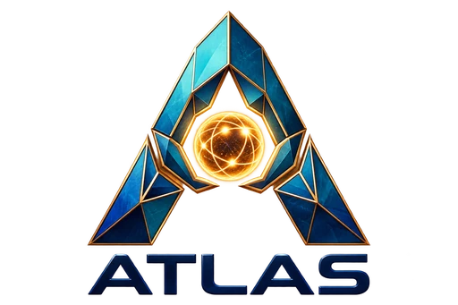
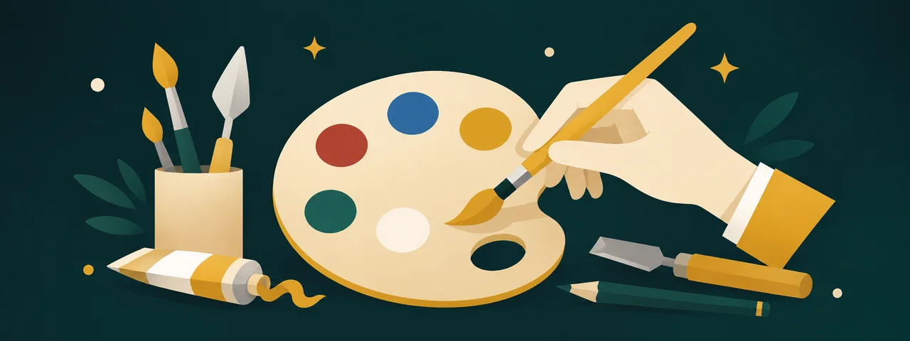

01
Vision
Artwork recognition and manual capture establish what the visitor is looking at.

ATLAS See the demoWRO 2026 Future Innovators
Art that speaks with you.
A wearable AI museum guide that sees the artwork, listens to the visitor, and turns curiosity into a continuing conversation.
One guide, personal to every visitor
ATLAS recognizes the work in front of you and keeps the thread of the conversation, so a simple follow-up can become a deeper encounter with art.
The visitor journey
Set a language, comfort level, interests, and accessibility preferences.
The wearable camera establishes the artwork context while keeping the visitor’s attention on the gallery.
Ask naturally, request a manual capture, or stay with an artwork long enough for ATLAS to offer more.
Short-term context supports follow-up questions about the current work, artist, technique, and story.
A conversation, not an audio track
Begin with the familiar face, then ask about the painter, the landscape, or why the portrait still holds our attention.
Inside ATLAS
Edge hardware handles the live museum experience while carefully scoped cloud services support speech and language intelligence.
Artwork recognition and manual capture establish what the visitor is looking at.

Speech recognition, retrieval, and language generation turn a question into an informed response.
Short-term context and visitor preferences keep the answer relevant without replacing museum staff.
Built for more visitors
20 languages available on demand.
The project
Team Touchdown at College Bourget is developing ATLAS for WRO 2026 Future Innovators: combining industrial design, embedded computing, computer vision, conversational AI, and a museum-ready visitor experience.